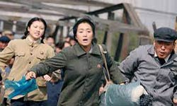
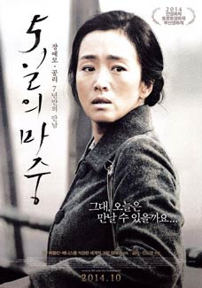
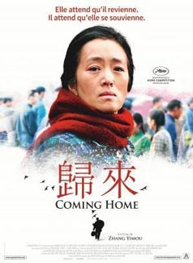
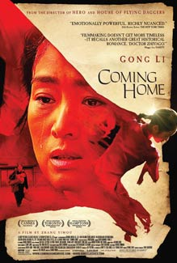
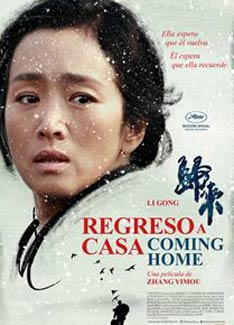

Zhang adapts another novel by Geling Yang (on whose book The Flowers of War was based), this time "The Criminal Lu Yanshi". The story revolves around Lu Yanshi and his wife, Feng Wanyu. Lu is a professor who is sent to a labour camp during the Cultural Revolution. Eventually, he manages to escape, only to see his daughter, Dandan, and his wife. His daughter, however, a teenage ballerina, is tempted to take the leading role in a play, in a series of events that result in her betraying her parents’ plan to meet with the police, and the arrest of Lu Yanshi. Years later, Lu returns to his home only to find his family broken, Dandan working as a textile worker and Feng, who had a cruel fate after the events, suffering from dementia, not even remembering him. Lu tries to reawaken her memories.
Zhang makes another harsh comment regarding the Cultural Revolution and the catastrophic impact it had on the people of China. Furthermore, through Feng’s character, he symbolizes the collective unwillingness of the Chinese people to speak about this horrible period, as they are not able to bear the pain they endured. However, the deeper meanings and the symbolisms are put aside after a fashion, with the melodrama taking over, thus resulting in an uneven film. Gong Li is outstanding as Feng Wanyu, portraying her fragile character with accuracy. The one who steals the show, however, is Zhang Huiwen who magnificently portrays a spoiled girl who gradually transforms into an adolescent who is bitter and filled with guilt.


Intriguingly, the director has successfully woven a Kafkaesque metaphor into a classically Chinese melodrama. Those who accuse the film of skirting around its political context by not directly recounting events of the Cultural Revolution might well be reminded that Feng’s amnesia can be read as the collective denial of a past too painful to recall - the film’s political implication being that even if history is forgotten, the trauma continues. The poignant ending, which evokes compromised happiness in an imperfect world, nonetheless extols forgiveness and acceptance as the only way to move on.

